This document reproduces all figures of the article:
David Meyer, Achim Zeileis, and Kurt Hornik. Visualizing contingency tables. In Chun-Houh Chen, Wolfang Härdle, and Antony Unwin, editors, Handbook of Data Visualization, Springer Handbooks of Computational Statistics, pages 589-616. Springer-Verlag, New York, 2008. ISBN 978-3-540-33036-3.
Click on each figure to see the corresponding R code. The complete R script is provided here.
Figure 12.1, p. 593: A grouped bar plot for the hospital data.
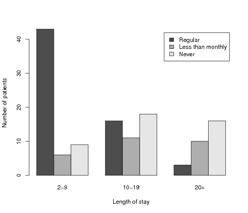
Figure 12.2, p. 593: A 3d-bar plot for the hospital data.
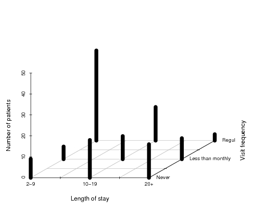
Figure 12.3, p. 594: Construction of a mosaic plot for the
hospital data, step 1.
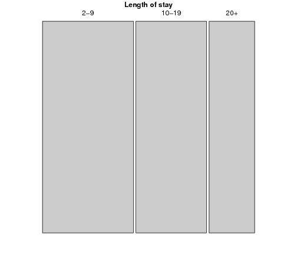
Figure 12.4, p. 594: Construction of a mosaic plot for the
hospital data, step 2.
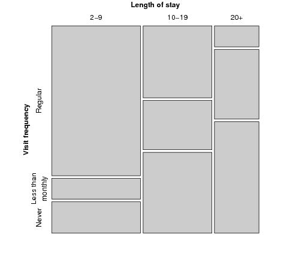
Figure 12.5, p. 595: Mosaic plot for the
hospital data, alternative splitting.
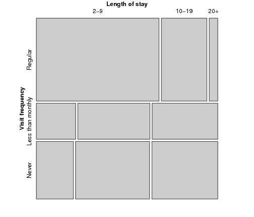
Figure 12.6, p. 597: Sieve plot for the hospital data.
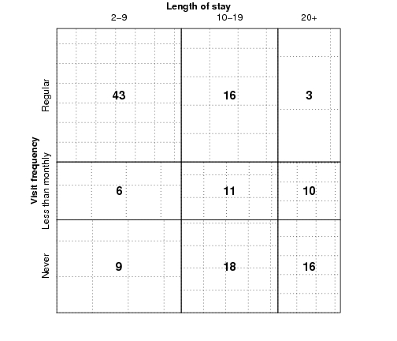
Figure 12.7, p. 597: Association plot for the
hospital data.
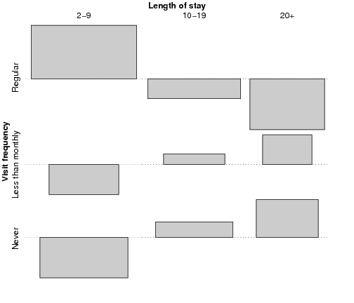
Figure 12.8, p. 600: Qualitative color palette for the HSV
(left) and HCL (right) spaces.
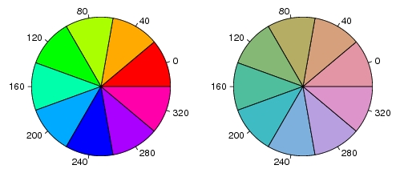
Figure 12.9, p. 600: Diverging color palettes for the HSV space
(upper part) and the HCL space (lower part).
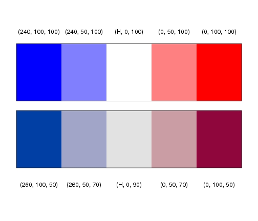
Figure 12.10, p. 601: Spine plot with highlighting for the
hospital data.
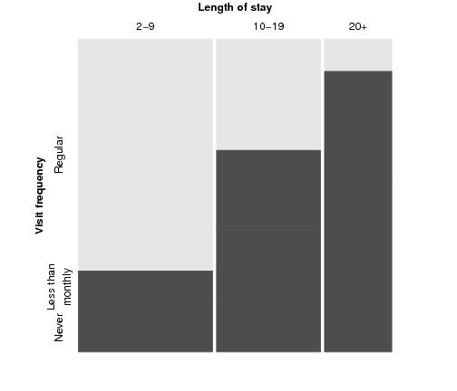
Figure 12.11, p. 602: Mosaic display of the hospital data with Friendly-like color coding of the residuals.
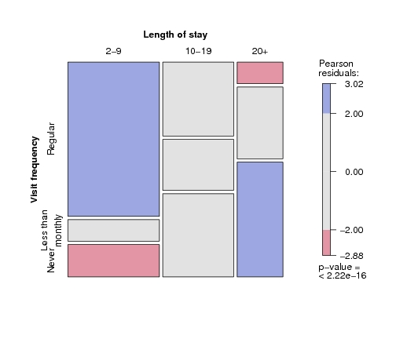
Figure 12.12, p. 603: Association plot of the hospital data with Friendly-like color coding of the residuals.
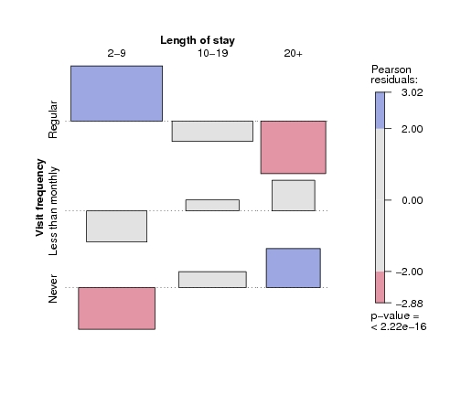
Figure 12.13, p. 605: Mosaic plot for the arthritis data, using
the χ² test and fixed cut-off points for the shading.
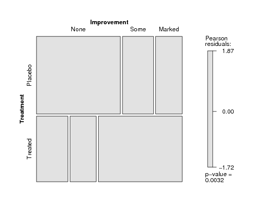
Figure 12.14, p. 606: Mosaic plot for the arthritis data, using
the maximum test and data-driven cut-off points for the residuals.
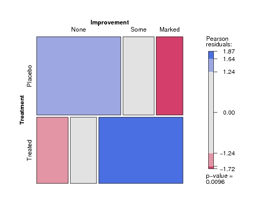
Figure 12.15, p. 608: Pairs-plot for the UCB admissions data.
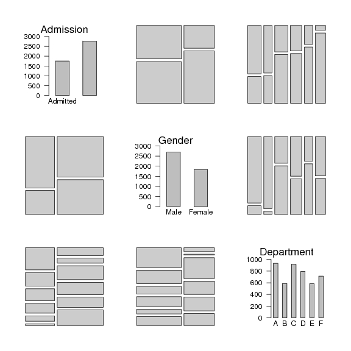
Figure 12.16, p. 609: Doubledecker plot for the UCB admissions data.
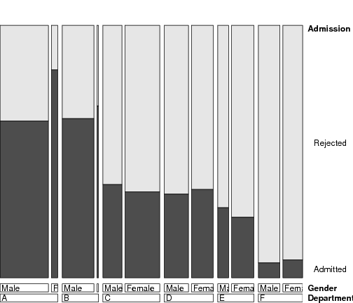
Figure 12.17, p. 610: Mosic plot for the UCB admissions data.
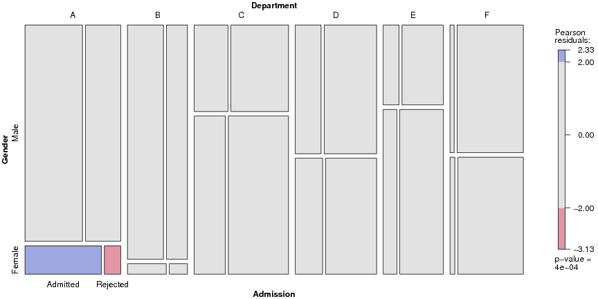
Figure 12.18, p. 610: Association plot for the UCB admissions data.
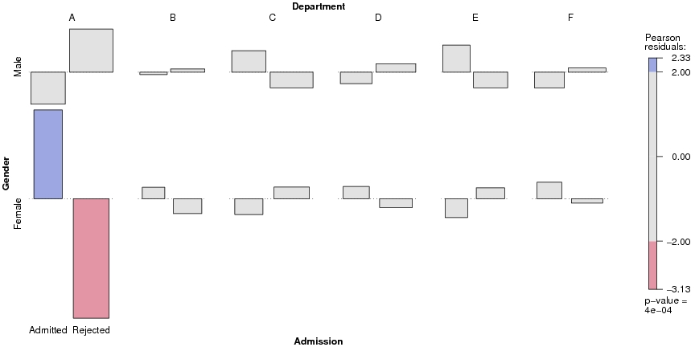
Figure 12.19, p. 611: Conditional association plot for the UCB admissions data.
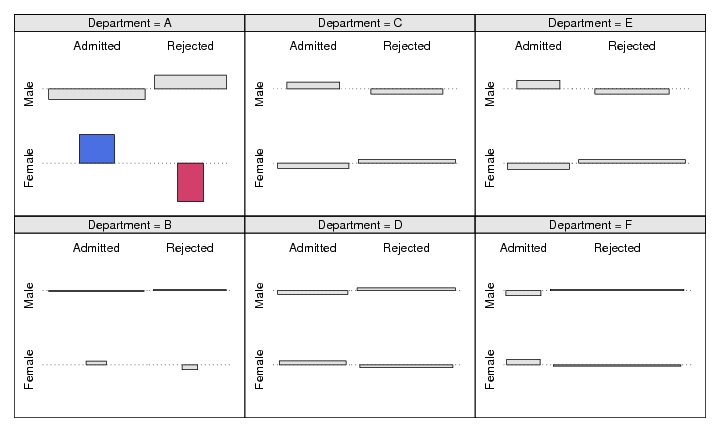
Figure 12.20, p. 612: Mosic plot with highlighting for the
punishment data.
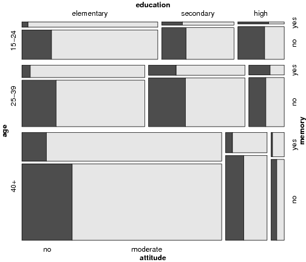
Figure 12.21, p. 613: Conditional mosaic plot for the punishment data.
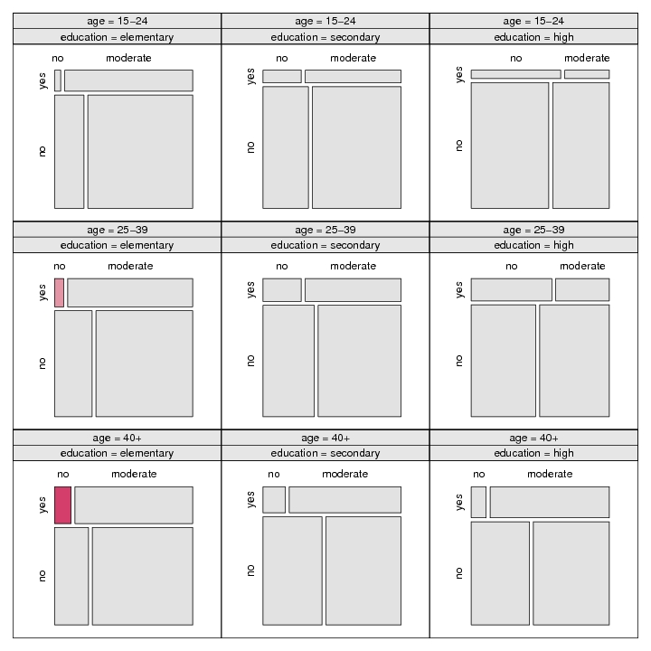